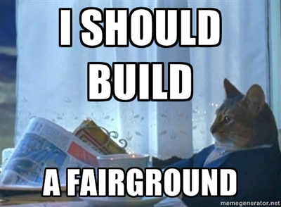

Introduction to Node.js

- Donovan Hutchinson
- @donovanh
- This talk: http://IPADDRESS:3000
- Web URL: http://hop.ie/go/node/
Goals
- Establish what Node.js is about
- Try it yourself
- Walkthrough of beta.hop.ie
Node.js
- Created by Ryan Dahl in 2008
- Server-side software system
- JavaScript based
Data I/O
| L1 | 3 cycles |
|---|---|
| L2 | 14 cycles |
| RAM | 250 cycles |
| Disk | 41,000,000 |
| Network | 240,000,000 |
Source: Ryan Dahl 2008 / Jeff Kunkle 2012
Story Time!
Merry-Go-Round
picture of merry go round with one person on it and big queueAttempt #2
More people on roundabout going to and from toilet alsoEvent Loop
similar structure to the merry go round, except with the actual labels (processes/event loop/IO)Source: Jeff Kunkle, 2012
JavaScript

What sort of
apps?

Modules

Currently: 24,640+ modules available
Code order
var fs = require('fs');
var contents = fs.readFile('./hello.txt','utf8', function(err,contents){
console.log(contents);
});
console.log("Hello from Node!\n");
Your turn
- Install Node: http://IPADDRESS:3000/downloads
- Create a new directory
- Create new file: server.js
Hello World
var http = require('http');var server = http.createServer(function (req, res) {
res.writeHead(200, {'Content-Type': 'text/plain'});
res.end('OMG Bacon\n');
});server.listen(1337, '127.0.0.1');console.log('Server running at http://127.0.0.1:1337/');Now run
node server.jsSource: Nodejs.org
Exercise 2
- Create two text files: joke.txt & punchline.txt
- Create app that outputs the joke to the browser
Solution: http://IPADDRESS:3000/downloads
Case Study
Beta.Hop.ie
Front-end
Hosting
- Self hosting
- Appfog
- Heroku
Debugging
- Node Inspector
Summary
The good
- Fast and scaleable
- Great community
- All JavaScript
The bad
- CPU-intensive apps
- Learning curve
- All JavaScript